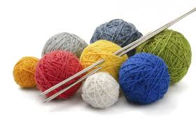

Current Poject
Current Project
It's an afghan made up 3 different coloured squares, 5x5. Each square is a different colour scheme: purple/red, blue/white, green/tan. I'm really just trying to use up excess yarn that I have around, so we'll see how it goes.
Visit Page